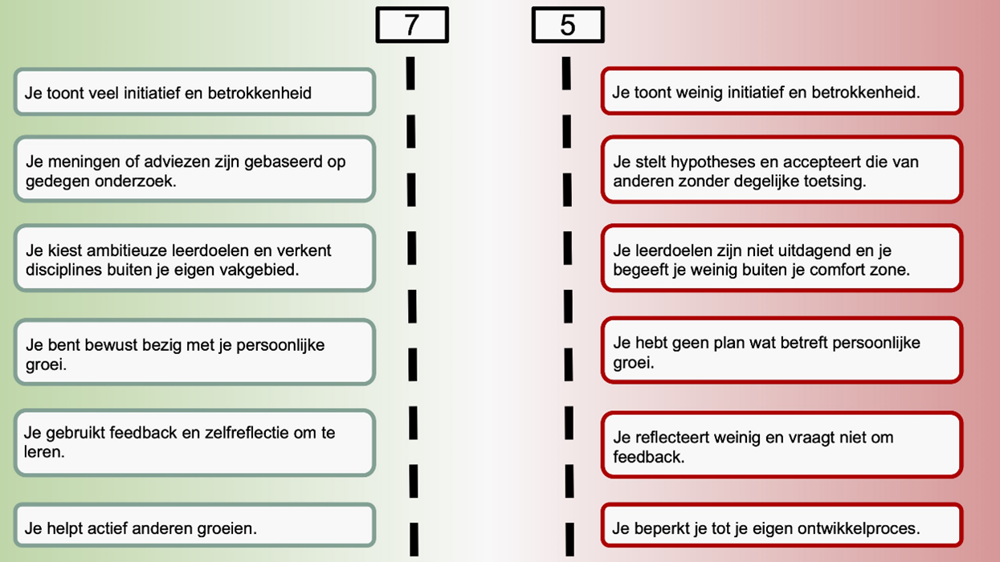

<!DOCTYPE html>
<html>
   <head>
      <title>
        Robert's Hello World
      </title>
      <link rel="stylesheet" type="text/css" href="style.css">
   </head>
   <html>

      <!DOCTYPE html>
      <html>
      <head>
      <style>
      body {
        font-size: 16px;
      }
      
      ul {
        list-style-type: none;
        margin: 0;
        padding: 0;
        overflow: hidden;
        background-color: rgb(0, 0, 0);
        position: -webkit-sticky; /* Safari */
        position: sticky;
        top: 0;
      }
      
      li {
        float: left;
      }
      
      li a {
        display: block;
        color: white;
        text-align: center;
        padding: 14px 16px;
        text-decoration: none;
      }
      
      li a:hover {
        background-color: #ff5e0e;
      }
      
      .active {
        background-color: #ff5e0e;
      }
      </style>
      </head>
      
</body>
</html>
   <body style="background-color:#9f9b9b;">

      
                  <!-- scrolfunctie -->
         
                  <ul>
                    <li><a href="index.html">Hello World</a></li>
                    <li><a class="active" href="smartme.html">Smart Me</a></li>
                    <li><a  href="smartbussines.html">Smart Bussines</a></li>
                    <li><a  href="smarttechnology.html">Smart Technology</Table></a></li>
                    <li><a  href="smartconnection.html">Smart Connection</a></li>
                    <li><a  href="smartproject.html">Smart Project</a></li>
                    <li><a  href="smartreview.html">Smart Review</a></li>
                    <li style="float:right"><a href="https://bkmoodle.aoohan.nl/my/"></a></li>
                  </ul>
      
         <!-- Headings -->
         <div id="title">
         <H1>Robert's Smart Me</H1>
         </div>

 <div class="container100">
          <section id="main1">
      <p>
        Ik heb voor deze minor gekozen omdat een combinatie is van bedrijfskunde en techniek. Daar liggen ook mijn interesses. 
        Het mooie vind ik dat deze combinatie niet altijd hetzelfde is in het technische bedrijfsleven. En dat is niet altijd goed of fout. 
        Van iedere aanpak valt vaak wat te leren. Het is aan mijzelf om informatie te verzamelen wat mij de optimale connectie tussen
        deze twee termen lijkt. 
      </p>
      </section> </div>

<div class="container100">
          <section id="main1">
      <p>
        Daarnaast vindt ik de techniek ook interessant. Dit is ook een reden waarom ik voor deze minor gekozen heb. 
        Voor mij is dit ook een mooie kans om te zien hoe het er "achter de schermen" aan toe gaat. (Letterlijk en figuurlijk)
        Een andere reden dat ik voor MSI gekozen heb is dat er ook stage gedaan moest worden. Zo kom je ook de combinatie 
        van bedrijfskunde en techniek tegen in het echte leven. Wilt u weten hoe mijn stage gegaan is? Ga dan naar Smart Project. 
      </p>
      </section> </div>

      <div class="container100">
        <section id="main1">
          <A href="smartproject.html">
      <button  class="button button1">Smart Project
      </button>
          </A> 
    </section> </div>

         <div class="container100">
          <section id="main1">
      <p>Ik weet het nog goed de eerste dag. Allemaal nieuwe gezichten. Wat doe ik hier dacht ik nog. Al snel voelde
         ik me comfortabel. Docenten die je heel open ontvingen. Toen er een rondje gedaan werd welke opleiding 
         iedereen deed voelde ik me al redelijk snel op mijn gemak. Er waren aardig wat studenten die ook Bedrijfskunde
          deden. Een stukje veiligheid. Op deze dag zijn ook de doelstellingen van MSI doorgenomen. Onderstaande competenties
          zijn besproken en doorgenomen. Op deze website zijn al mijn ervaringen die ik heb opgedaan tijdens MSI te vinden. 

          
      </p>
      
      </section> </div>
        <!--cards-->
  